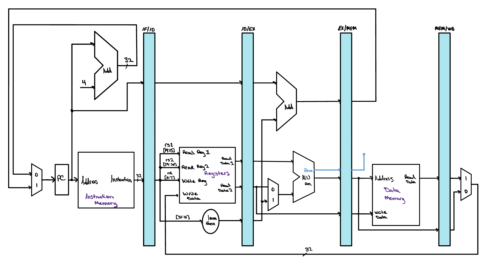
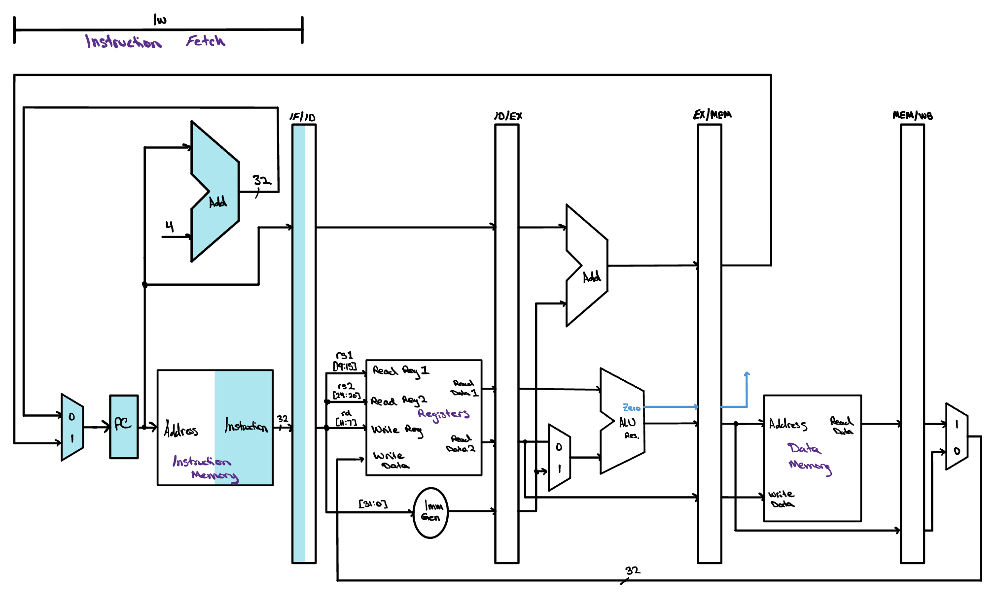
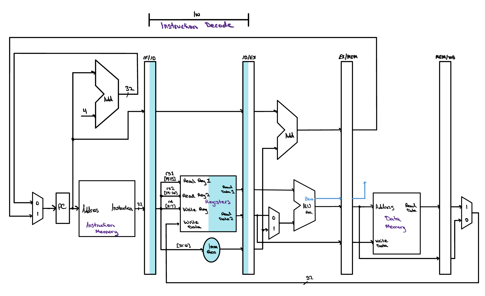
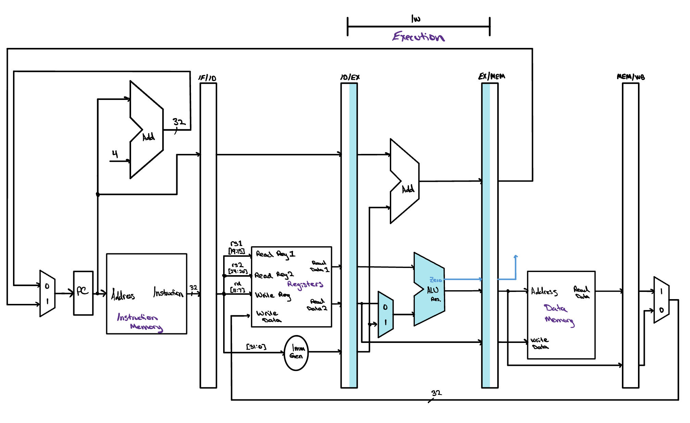
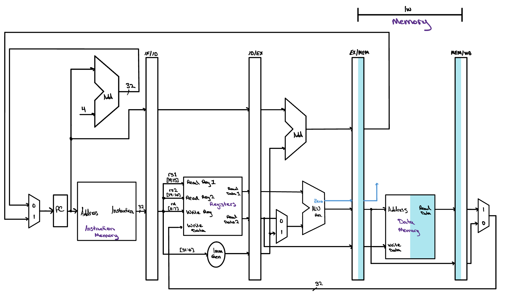
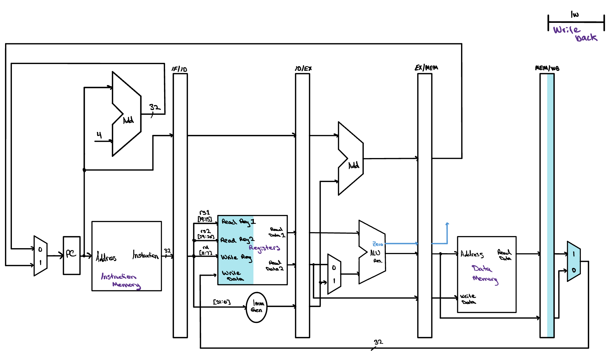
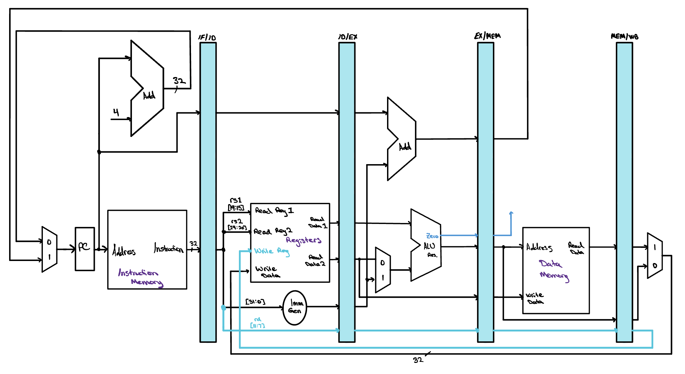
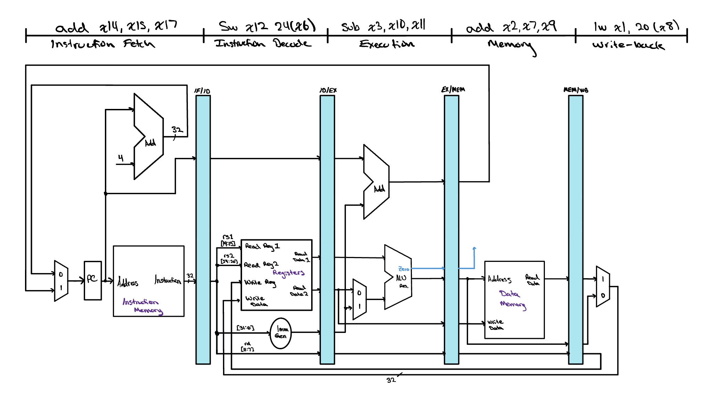

The Pipelined Datapath
The pipelined datapath looks quite similar to the single cycle datapath we learned about before but with a few small changes. In this lesson, we'll learn about how we can transfer data from one instruction through the datapath without stomping on data from other instructions.

Pipeline Registers

Fetch, Decode, Execute, Memory, and Writeback: these are the 5 stages we discussed previously that we could break our single cycle datapath into. We can show this a few ways, one of which is by pretending each instruction has its own datapath and placing each of them staggered in different rows. This makes it clear which stages of the instruction are happening concurrently, and whether there will be any hazards introduced by running certain combinations of instructions at the same time. Below is the single cycle datapath but with the 5 unique stages identified. Apart from the data being written from memory to the register file and the calculated new branch address, all the signals in this datapath are moving from left to right through each stage.
It may appear that to perform multiple instructions at the same time we need multiple datapaths. This is a confusing point, and it is a common mistake many people make when learning pipelining for the first time. It makes sense, right? Each instruction has data that is used in all five stages, and this data is vital to the instruction being performed properly. If we start another instruction while the first instruction's data is still working its way through the path, we will overwrite that data before the first instruction has had a chance to finish.
To keep every instruction's values safe as it travels, we can place a register between each pair of neighboring stages. Anything an instruction will still need in a later cycle is written into that register at the end of the cycle. Those values then sit well out of reach of the instruction coming up behind, so nothing arriving later can overwrite them. These are the pipeline registers, highlighted in blue in the image below. Each one has to be large enough to fit everything being stored in it, so all of the data, addresses, and control information an instruction carries forward has room to sit together.

The PC is a special case. It sits at the front of the datapath and feeds instruction memory every cycle, yet we do not count it as a pipeline register. It is architectural state, meaning it is part of the machine's visible condition rather than a value merely in flight. That distinction matters when an exception arrives, which is something we will come to later, because the contents of the PC must be saved while the contents of the pipeline registers can safely be discarded. You may also notice that no pipeline register follows Writeback. None is needed, since that stage already updates state the machine keeps anyway, whether that is the PC, the register file, or memory.

The Missing Piece
Before we go any further, it is worth looking at the datapath we have just built with a more critical eye, because there is a mistake in it. Did you catch it? Ask yourself which instruction supplies the register file with the destination that a word loaded from memory should be written into. Follow the wire back and you will find that it comes from the instruction sitting in the IF/ID register, which is whatever the processor happens to have fetched most recently. By the time a load reaches Writeback, that is an instruction three further down the program, and it has nothing whatsoever to do with the load.
The trouble becomes clear as soon as we ask a simple question.
During a load, how is the Writeback stage supposed to know
where in the register file to put the data it has just been handed?
Look at what actually arrives at that stage and you will find the
value coming back from memory and nothing else. The
destination register number is not there. The
rd field belongs to an instruction that
left Decode three cycles ago, and the stage it was read in
has long since moved on to somebody else's work.





The fix is one the datapath already uses elsewhere. A store
instruction reads the value it means to write during
Decode and then carries that value forward through the
ID/EX and EX/MEM registers, so it is still in hand when
Memory finally needs it. A load has to do exactly the same
thing with its destination register number, passing
rd from IF/ID into ID/EX, then into
EX/MEM, and at last into MEM/WB, so that it arrives at
Writeback alongside the data it belongs to.
The corrected datapath here adds exactly that path, drawn in blue. The register number is pulled out of the instruction held in IF/ID, rides every pipeline register in turn, and only then reaches the write port of the register file, where it finally names the register the loaded word is going into. Notice how little the fix costs us. Nothing new computes anything, and no stage does more work than it did before. All we have added is width to the pipeline registers, so that five more bits can travel alongside everything else an instruction is already carrying.

There is a general rule hiding in this correction, and it is worth taking with us. Anything an instruction will still need in a later stage has to travel with it through the pipeline registers, because the stage that produced it is already busy with the instruction behind. Every value the datapath hands forward obeys that rule, and the destination register number was simply the one we had forgotten.
Pipeline Diagrams
It helps to put a worked example in front of us. The five instructions we will follow through the pipeline are lw x1, 20(x8), add x2, x7, x9, sub x3, x10, x11, sw x12, 24(x6), and add x14, x15, x17. There are two common ways to draw a program like this one working its way through the datapath, and each answers a different question. The first freezes time and asks what the hardware is doing at this very moment. The second lets time run and asks how the whole program unfolds.
The single cycle diagram draws the datapath once and labels each stage with the instruction sitting in it during that one clock cycle. Reading from right to left walks backward through the program, because the instruction nearest Writeback entered the pipeline first and the one still in Fetch arrived most recently. All five instructions are inside the machine at the same instant, each one occupying a different piece of hardware, and that overlap is exactly what pipelining buys us.

The multiple cycle diagram turns that same execution on its side. Every row is one instruction and every column is one clock cycle, so an instruction's five stages march across the page a cycle at a time. Since each instruction starts one cycle after the one above it, the stages settle into diagonal bands, and the filling and draining of the pipeline at the beginning and end of the program becomes easy to see. Reading straight down any column tells you which stage every instruction is in during that cycle, which is the same information a single cycle diagram captures for one column at a time. Cycle 5 is the interesting one here, since that is the only column where all five stages are busy, and it is precisely the moment drawn in the diagram above.

For now, this is our datapath. It fetches an instruction every cycle, carries each instruction's values forward through the pipeline registers, and finishes one instruction per cycle once the pipeline is full. What we have quietly assumed all the way through is that the five instructions have nothing to do with one another. None of them reads a register that an instruction still in flight is about to write, and none of them is a branch, so the fetch stage has always known which instruction comes next. Real programs are rarely so considerate.
The moment an instruction needs a result that an earlier instruction has not written back yet, we have a data hazard, and the moment a branch is fetched, the instructions behind it enter the pipeline before anyone knows whether they should have been fetched at all, which is a control hazard. The datapath drawn above has no way to notice either situation. It will read a stale register and finish the instruction anyway, and it will let the instructions behind a taken branch run to completion. Next we will work out the extra logic the datapath needs to handle these cases correctly, forwarding a result back to the stage waiting on it, stalling the pipeline when even forwarding cannot deliver a value in time, and flushing the instructions that were fetched down the wrong path. The five stages will stay exactly where they are. What we add is the hardware that keeps them honest.
Check Yourself
In this pipelined datapath, an instruction reads its operands from the register file during Decode while an earlier instruction may be writing its own result back during the very same clock cycle. How do we make a read and a write to the same register in the same cycle behave correctly?